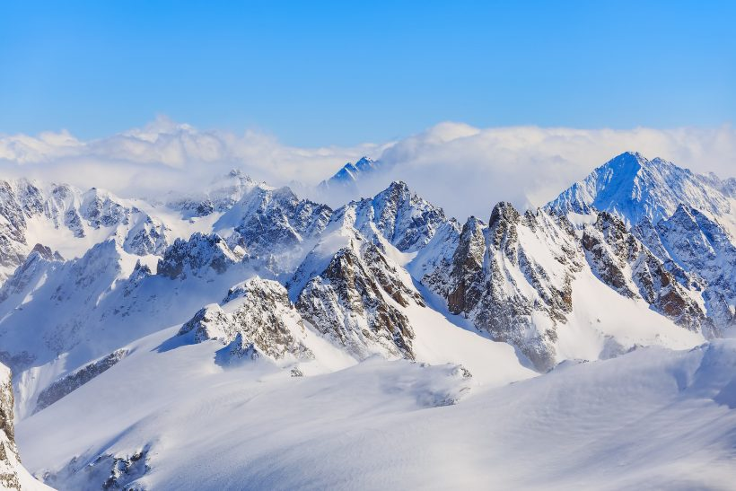
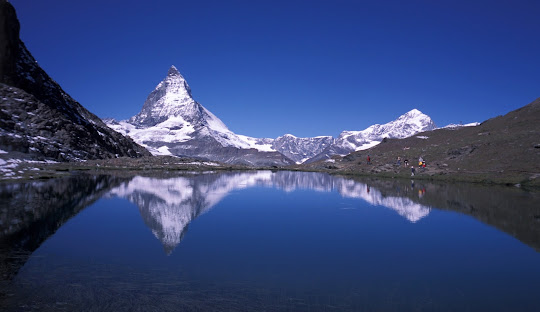

Lugares que você precisa conhecer na Europa
Alpes Suiços



Alpes Suíços são uma cadeia de montanhas espetacular que se estende pela Suíça, formando uma parte
significativa da paisagem e da cultura do país. Aqui estão alguns pontos importantes:
- Paisagens Deslumbrantes: Os Alpes Suíços oferecem paisagens de tirar o fôlego, com picos
cobertos de neve, lagos cristalinos e vales pitorescos.
A região é conhecida por sua beleza natural incomparável.
- Atividades ao Ar Livre: Os Alpes proporcionam uma variedade de atividades ao ar livre, como
esqui e snowboard no inverno, e caminhadas, ciclismo e escalada durante o verão.
As estações de esqui
suíças, como Zermatt e Verbier, são famosas mundialmente.
- Cultura Alpina: A região dos Alpes Suíços é rica em tradições culturais alpinas.
Isso
inclui festivais locais, música tradicional, arquitetura de montanha e gastronomia única, como o famoso
fondue suíço.
- Monte Cervino (Matterhorn): Um dos picos mais icônicos dos Alpes Suíços, o Matterhorn, é
conhecido por sua forma distintiva de pirâmide e é um destino popular para alpinistas e entusiastas de
montanhismo.
- Trilhas Panorâmicas: Existem trilhas incríveis, como a Trilha Eiger, que oferece vistas
deslumbrantes das montanhas e geleiras.
Essas trilhas são ideais para quem deseja explorar a região a
pé.
- Vilarejos Encantadores: Ao longo dos Alpes Suíços, você encontrará encantadores vilarejos
alpinos com casas tradicionais, proporcionando uma experiência autêntica e acolhedora.